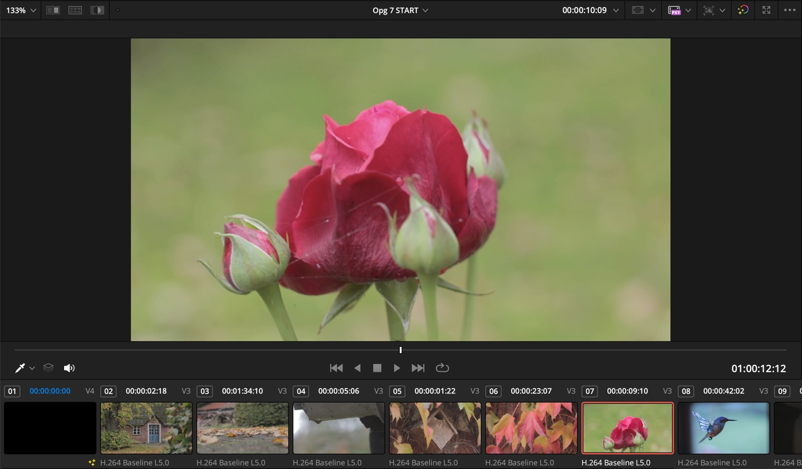
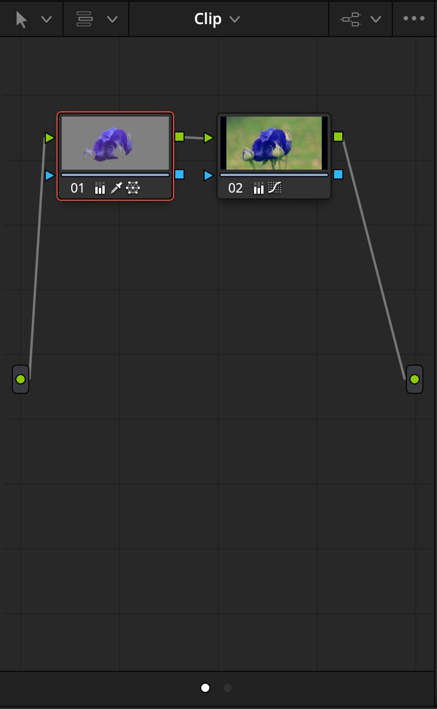
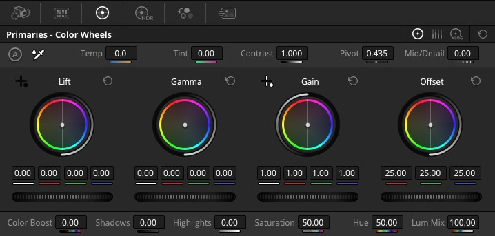
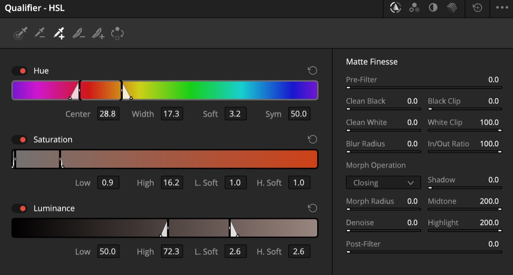
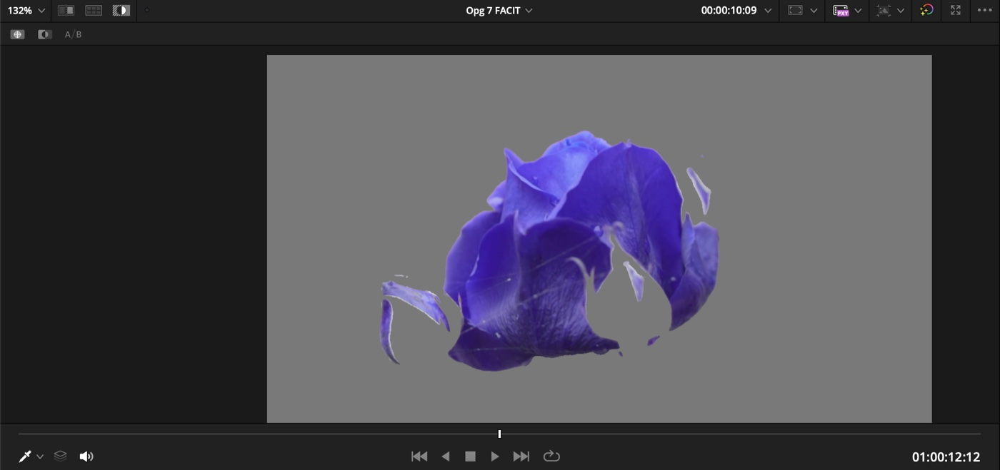
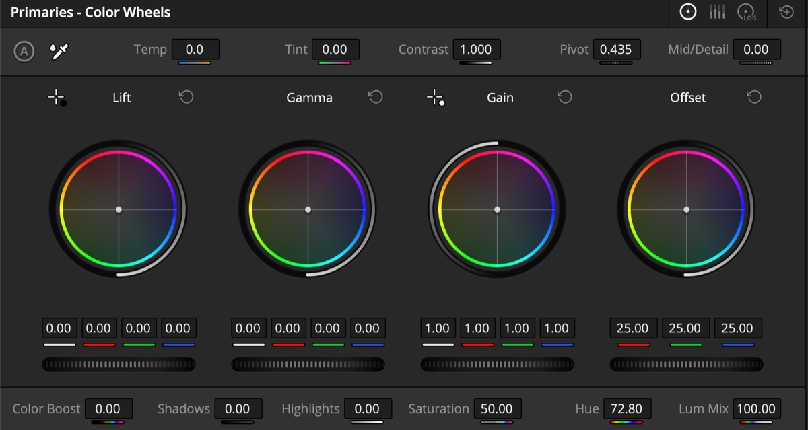
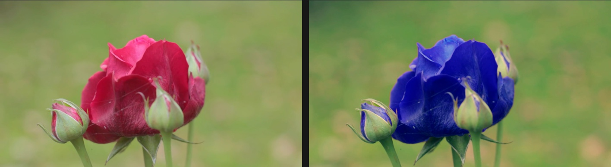

Første del · 5 min
Sådan er siden bygget
Du skal ikke kunne det hele. Du skal vide, hvad tingene hedder, og hvor de bor. Og én regel: ret billedet, før du styler det. Først skal lys og farve være teknisk rigtige, så kommer det kreative.
-
Viewer
Billedet, som det bliver. Under det ligger klippene som små billeder.

-
Nodes
Alt, du gør på Color-siden, lever inde i en node. Vil du gøre noget mere, tilføjer du en node mere. Så kan hver ændring slås fra og til for sig.

-
Primaries
Fire farvehjul: Lift (skygger), Gamma (mellemtoner), Gain (højlys) og Offset (hele billedet). Det er her, man bruger mest tid.

-
Scopes
Grafer over billedets lys og farve, mere præcise end øjet. Det er dem, man retter efter.
Anden del · 4 + 15 min
Skift rosens farve
En Qualifier vælger pixels ud fra farve. Du vælger kun det røde i rosen, og så ændrer du kun det.
-
Find rosen, og lav en ny node
Klik på klippet med rosen i rækken under viewer. Højreklik i Nodes, og vælg Add Node → Add Serial, eller tryk Alt + S (Windows) / Option + S (Mac).
-
Klik på det røde med pipetten
Åbn Qualifier, vælg pipetten, og klik på rosen i viewer. Træk pipetten hen over rosen, så du får flere nuancer af rødt med.

Pipetterne sidder øverst til venstre i panelet. Det markerede stykke af Hue-bjælken er de røde nuancer, du har valgt. -
Se, hvad du har valgt
Slå Highlight til med ikonet øverst til venstre i viewer, eller tryk Shift + H. Nu er alt andet end dit udvalg gråt. Er der huller i rosen, så træk pipetten over dem også.

-
Drej farven
Slå Highlight fra igen. Under farvehjulene i Primaries sidder Hue. Træk i tallet, og rosen skifter farve. Resten af billedet bliver, som det var.

Hue sidder i rækken under farvehjulene. 50 er udgangspunktet. 
Før og efter. Kun det røde har skiftet farve.
Gør selv · 15 min
Giv rosen en ny farve. Sammenlign med Opg 7 FACIT.
Hele billedet skifter farve
Så er Qualifier ikke sat, eller pipetten ramte noget, der ikke er rødt. Tjek med Highlight, hvad der faktisk er valgt.
Kanten af rosen ser ujævn ud
Det er normalt, og det er en del af pointen. Optagelsen er komprimeret (H.264), og så er farverne i kanten en blanding af rødt og grønt, som Qualifier ikke kan skille helt ad. Kanten kan blødes lidt op under Matte Finesse i Qualifier-panelet, men den bliver aldrig perfekt på dette materiale.
Hurtigt færdig?
Prøv en anden farve, eller gør rosen mere eller mindre mættet med Sat ved siden af Hue. Eller find et andet klip i introen, og skift farven på noget i det.